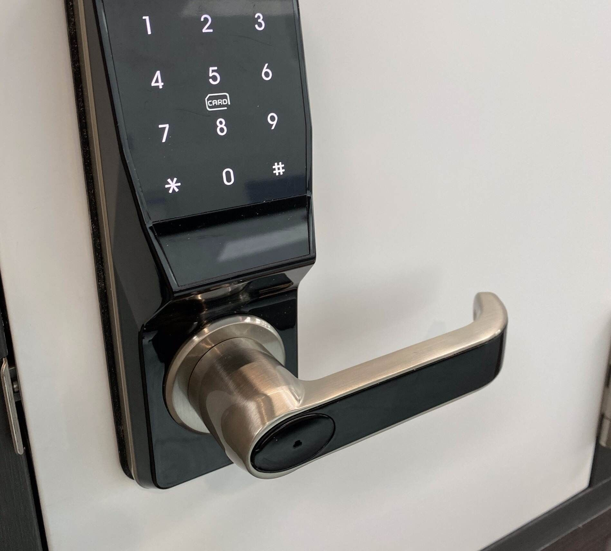
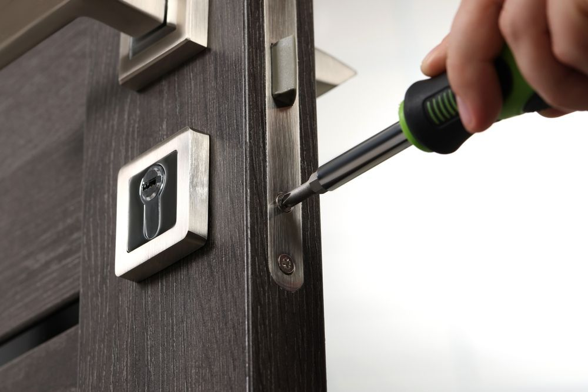

On this page
AT A GLANCE
It only takes one misplaced master key or a faulty lock on a fire exit to expose a business to serious risk.
It only takes one misplaced master key or a faulty lock on a fire exit to expose a business to serious risk. Many owners don’t think about their security systems until something goes wrong, yet the consequences of outdated hardware or poor access control can be immediate and costly. This is where a commercial locksmith becomes more than just a tradesperson — they become a critical partner in protecting assets, people and reputation.
From retail storefronts and hospitality venues to industrial estates and strata complexes, modern businesses face security challenges that are far more complex than simply replacing a lock. Understanding what a professional commercial locksmith provides, and why it matters, can help businesses move from reactive fixes to proactive protection.
Commercial Security Demands More Than Residential Solutions
Business premises operate under entirely different conditions compared to homes. The scale, frequency of use and compliance requirements make commercial-grade security essential. Unlike residential locks, commercial hardware must withstand constant traffic, stricter regulations and higher risk exposure. Offices, warehouses and retail spaces often rely on heavy-duty door closers, panic hardware and restricted key systems that meet Australian Standards and insurance requirements.
Professional commercial locksmith services typically include:
- Installation of commercial-grade locks & hardware
- High-security deadlocks & restricted key systems
- Fire-rated door hardware & exit devices
- Heavy-duty door closers & strike plates
Attempting to adapt residential products for business use can compromise safety and compliance. A specialist understands load ratings, durability requirements and how different hardware performs in high-traffic environments.
Security Risks That Gold Coast Businesses Commonly Face
Operating in busy retail precincts, industrial areas and hospitality hubs brings unique security pressures. Businesses must account for both opportunistic crime and internal vulnerabilities. Retail theft, unauthorised after-hours access and poorly controlled staff key distribution are frequent issues. Industrial sites often deal with perimeter breaches, while hospitality venues face high turnover and complex access requirements.
Common risk areas include:
- Lost or unreturned staff keys
- Shared keys without tracking
- Inadequate after-hours locking procedures
- Outdated lock systems vulnerable to picking or bumping
Partnering with a trusted commercial locksmith allows these risks to be assessed and addressed systematically rather than reactively.
Compliance With Australian Standards Is Not Optional
Commercial properties must comply with strict regulations covering fire safety, emergency egress and building access. Non-compliant locks can void insurance policies and create serious legal exposure.
Exit doors, for example, must allow safe and immediate evacuation. Fire-rated doors require compatible hardware that does not compromise integrity. Workplace health and safety obligations also demand secure yet accessible entry points.
A professional locksmith ensures:
- Exit devices meet fire safety regulations
- Locks align with insurance conditions
- Door hardware supports WHS requirements
- Upgrades are documented for compliance records
Meeting these standards is not simply about ticking boxes. It protects staff, customers and business owners from preventable liability.
Master Key Systems Simplify Complex Access Needs
As businesses grow, so does the complexity of access control. Offices with multiple departments, multi-tenant buildings and strata-managed complexes all benefit from structured key hierarchies. Master key systems allow controlled access without issuing identical keys to everyone. Managers can open all areas while staff access only designated zones. This improves both accountability and convenience.
Advantages of master key systems include:
- Reduced key duplication
- Clear access levels across departments
- Improved control in shared buildings
- Simplified management for body corporates
Gold Coast commercial locksmiths often design these systems with scalability in mind, allowing future expansion without replacing the entire setup.
Access Control Brings Modern Flexibility
Physical keys are no longer the only solution. Many businesses are transitioning to electronic access systems that offer greater oversight and adaptability. Swipe cards, fobs and keyless entry systems allow permissions to be updated instantly. When staff leave, access can be revoked without changing locks. Audit trails provide visibility into who entered specific areas and when.
Modern access control options include:
- Keypad & card-based entry systems
- Restricted key systems to prevent duplication
- Integrated door & gate access
- Scalable systems for growing operations
For expanding businesses, combining traditional locks with electronic solutions offers layered protection without overcomplicating daily operations.
Emergency Lockouts Disrupt Operations Quickly
Few situations are more stressful than being locked out of your own premises before opening hours. Broken keys, malfunctioning locks or security breaches can halt operations and affect revenue. A professional business locksmith Gold Coast operators trust provides rapid response and after-hours support. Speed matters when staff are waiting outside or security has been compromised.
Emergency services often cover:
- After-hours lockout assistance
- Urgent lock repairs or replacements
- Securing premises after break-ins
- Immediate rekeying following staff departures
Having a reliable contact for urgent situations reduces downtime and protects both income and reputation.
Preventative Maintenance Protects Business Continuity
Security should not be addressed only after an incident. Ongoing maintenance and periodic audits ensure systems remain functional and effective. Locks endure wear and tear, particularly in high-traffic environments like retail and hospitality venues. Door misalignment, faulty closers or worn cylinders can compromise security without obvious signs.
Preventative services may involve:
- Routine lock inspections & servicing
- Rekeying as part of staff turnover protocols
- Upgrading outdated hardware
- Reviewing access control configurations
Regular assessments help identify weaknesses before they become liabilities, supporting uninterrupted business operations.
Strategic Security Planning Strengthens Long-Term Protection
Effective commercial security extends beyond hardware installation. It involves planning for growth, risk mitigation and evolving threats. Industrial estates may require perimeter control and heavy-duty locking systems, while office complexes benefit from structured key management. Retail and hospitality operators need practical solutions that balance accessibility with security.
A strategic approach typically includes:
- Comprehensive security audits
- Layered security recommendations
- Integration with alarm & monitoring systems
- Future-proofing access infrastructure
Working with professionals who understand commercial environments ensures solutions are tailored rather than generic.
Secure Your Business With Confidence
We at SPL Security Solutions understand the security challenges faced by businesses across the Gold Coast CBD, Southport, Surfers Paradise, Robina and Burleigh Heads. Whether you manage a retail precinct, hospitality venue or industrial site, our team provides tailored support designed to protect your operations and keep you compliant. If you’re reviewing your security systems or need urgent assistance, speak with a commercial locksmith on the Gold Coast for reliable and practical solutions. Contact us today to discuss your requirements or book a service with our experienced team.



